How to Use Arq with DreamObjects
Overview
Arq is a Mac and Windows app that allows you to make online backups that support DreamObjects. Arq backups are encrypted with a password before they’re uploaded so your data is protected.
The installation and configuration of Arq varies depending on the operating system. Click your operating system below to jump to the proper instructions.
Connecting with Arq on Windows
Launch Arq:
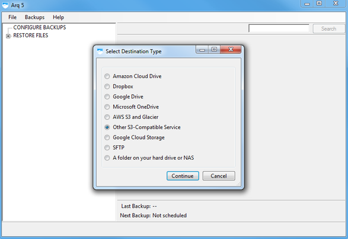When launching Arq for the first time, you are prompted to choose your backup destination type. Click the ‘Other S3-Compatible Service’ option, and then click continue.
Enter DreamObject’s hostname:
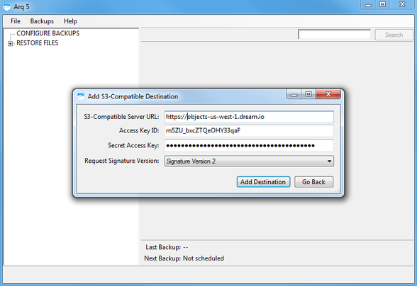For the S3-Compatible Server URL, enter the hostname ‘https://objects-us-west-1.dream.io‘. Next ensure that the signature version defaults to ‘Signature Version 2’, and then fill in the access and secret keys with the values from the DreamHost panel. Click continue to advance to the next step. Read how to find your DreamObjects Keys.
Enter a bucket name:
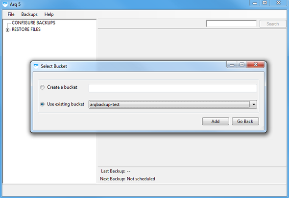Arq will prompt you to enter a new bucket name, or select an existing bucket. Choose the option you want and enter a name if necessary, then click Add to complete.
Set up backups:
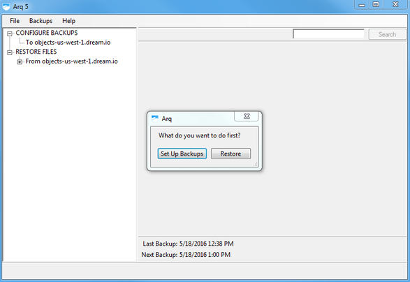After your bucket is configured, Arq will ask if you want to setup a new backup schedule, or to restore files from this bucket (which requires existing backups in your bucket). Click Set Up Backups.
Encrypt backups:
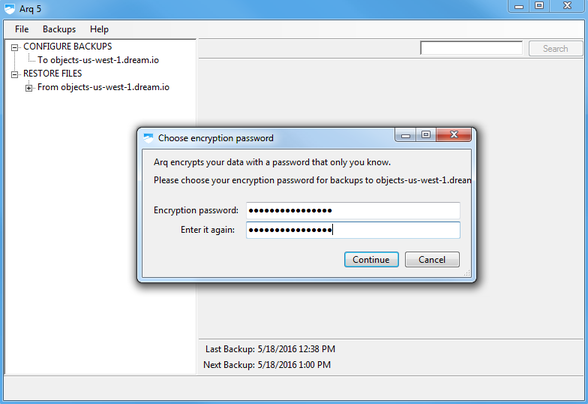Create an encrypted password for your backup which allows additional security for the backup created.
Store the encryption password:
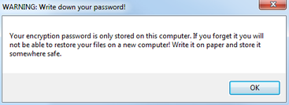After you enter an encrypted password, be sure to write down the password you created and store it somewhere safe.
Choose the folders to backup:
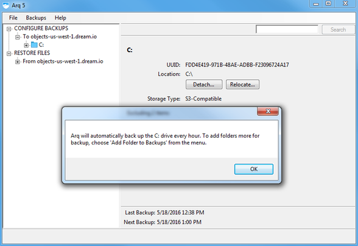On Windows systems, Arq defaults to backing up the entire C: drive excluding only the Recycle Bin and the pagefile.sys file.
Edit backup suggestions:
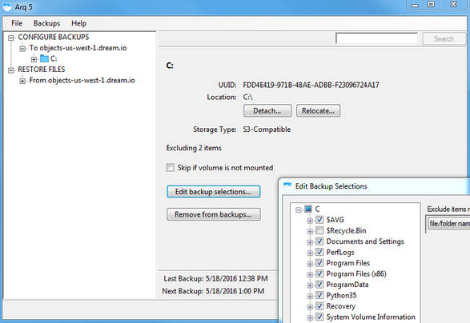To add or remove files or folders, click the Edit backup suggestions button, which will allow you to customize the selection.
Arq is now configured to backup your data.
Connecting with Arq on Mac
Launch Arq
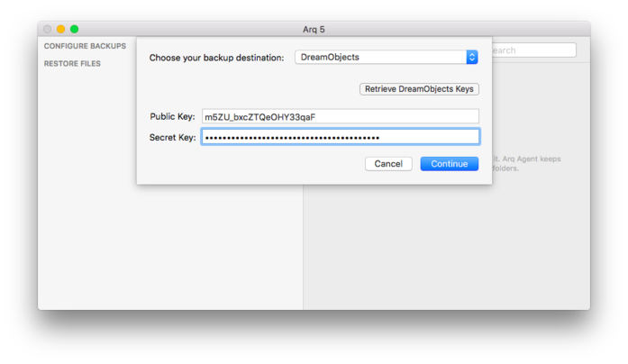Launch Arq. When launching Arq for the first time, you are prompted to choose your backup destination type. Select ‘DreamObjects’ from the drop-down list. Fields to enter the access and secret keys will appear as well as a button to open the DreamHost panel to find your keys. Enter your desired keys. Read how to find your DreamObjects Keys.
Select bucket or create one:
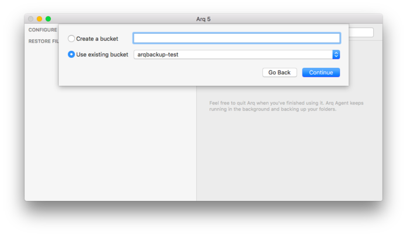After you enter the DreamObjects access Key and secret Key, enter a new bucket name or select an existing bucket from the drop down list.
Set up backups:
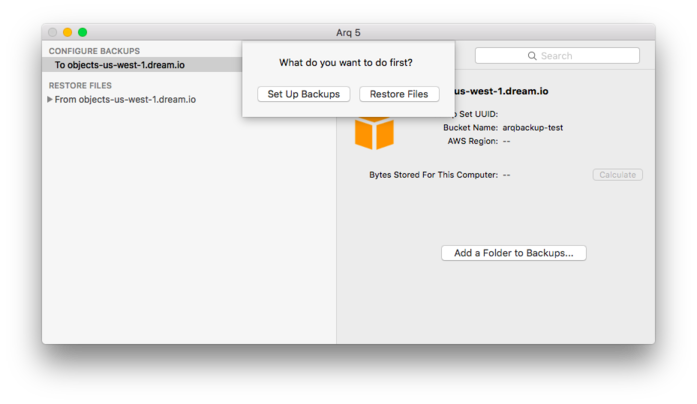After your bucket is configured, Arq will ask if you want to setup a new backup schedule, or to restore files from this bucket (which requires existing backups in your bucket). Click Set Up Backups.
Encrypt backup:
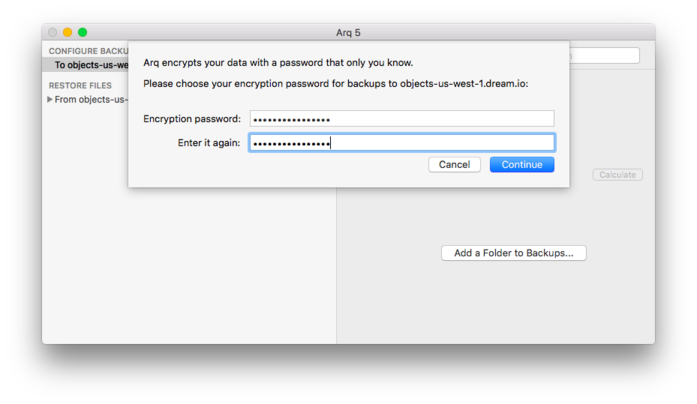Create an encrypted password for your backup which allows additional security for the backup created.
Store your password:
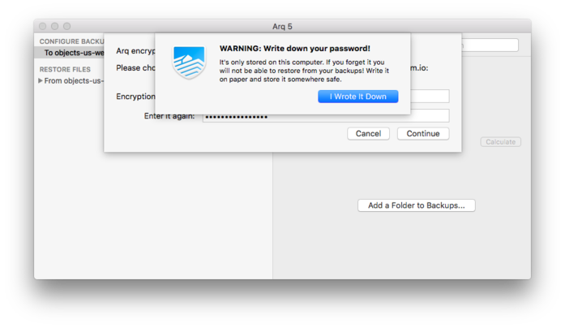After you enter an encrypted password, be sure to write down the password you created and store it somewhere safe.
Choose the folders to backup:
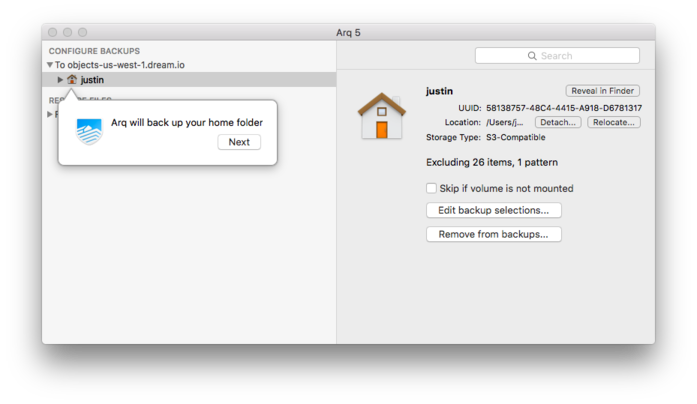On Mac systems, Arq defaults to backing up the /Users directory, excluding files it knows are unnecessary like cache and page files.
Edit backup suggestions:
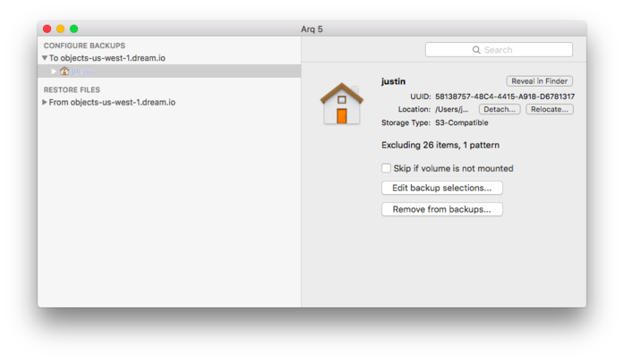To add or remove files or folders, click the Edit backup suggestions button, which will allow you to customize the selection.
Arq is now configured to backup your data.